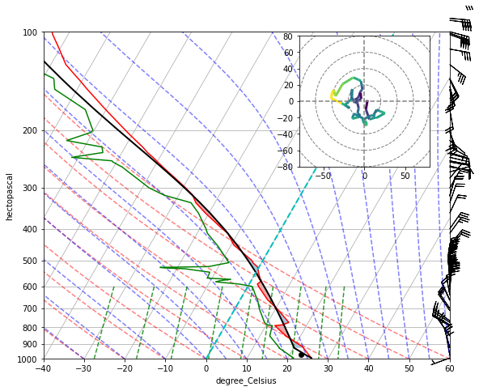
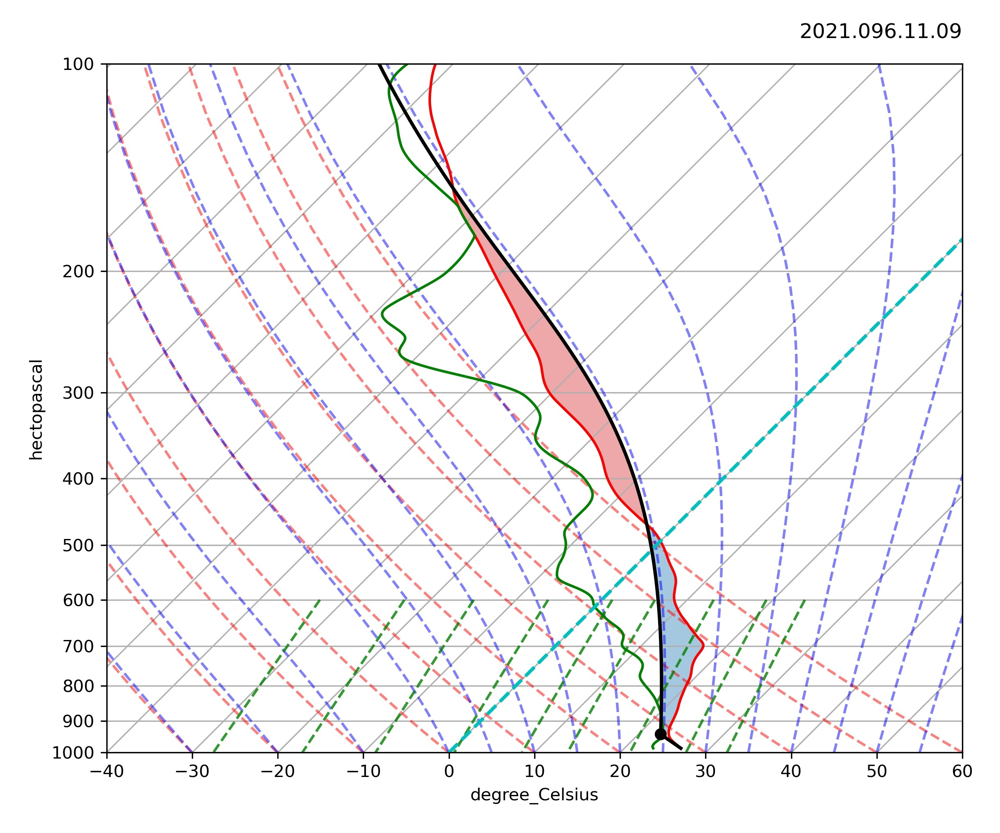

Skew-T log-P
The Skew-T log-P diagram is used to look and obtain the upper meteorological condition information. There are six basic lines:
- Temperature
- Pressure
- Dry Adiabats
- Moist Adiabats
- Mixing Ratio
- Wind Staff
You can check completely in here.

Plotting Skew-T log-P is used radiosonde and GNSS-RO data. You can uses MetPy Module.
This is the examples Skew-T log-P diagram
- Radiosonde 
- GNSS-RO 
See my code here.